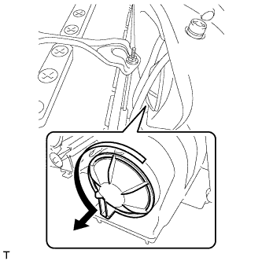
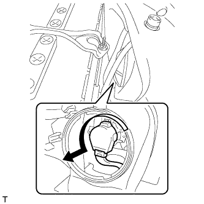
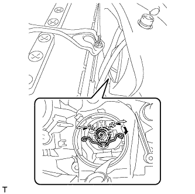

ГАЗОРАЗРЯДНЫЕ ЛАМПЫ ФАР > СНЯТИЕ |
| 1. ОТСОЕДИНИТЕ ПРОВОД ОТ ОТРИЦАТЕЛЬНОГО ВЫВОДА АККУМУЛЯТОРНОЙ БАТАРЕИ |
| 2. СНИМИТЕ ЗАДНЮЮ КРЫШКУ ФАРЫ № 1 |
|  |
Поверните заднюю крышку в направлении, указанном стрелкой, и снимите ее.
| 3. СНИМИТЕ ГАЗОРАЗРЯДНУЮ ЛАМПУ ФАРЫ |
|  |
Поверните разъем ЭБУ управления освещением в направлении, указанном стрелкой, чтобы отсоединить его.
|  |
Освободите пружинный стопор, как показано на рисунке, и снимите лампу.